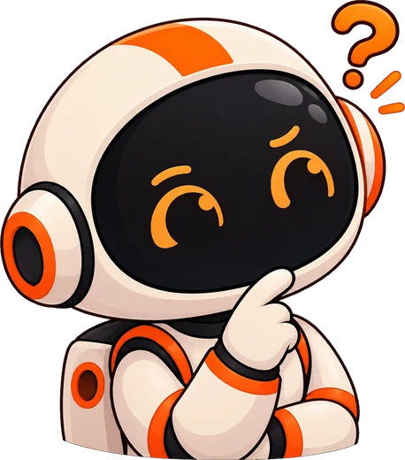
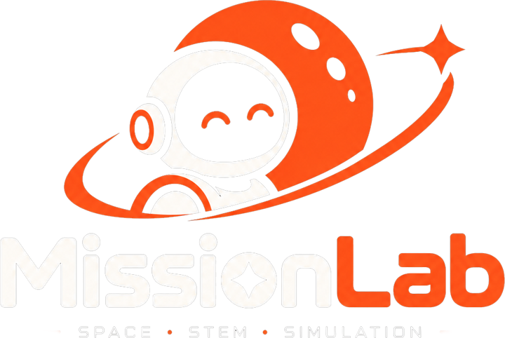
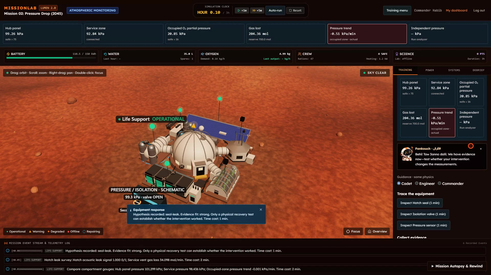
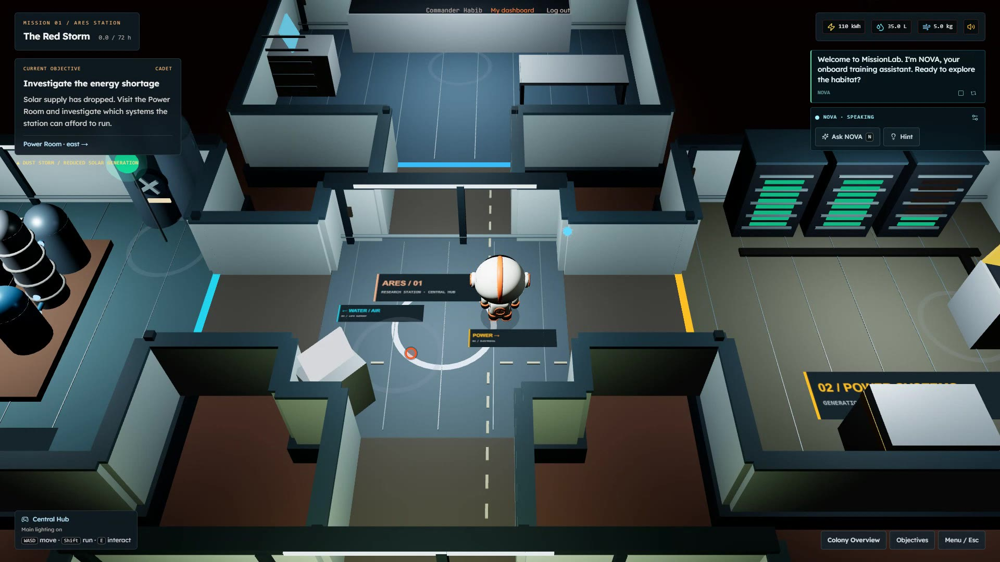
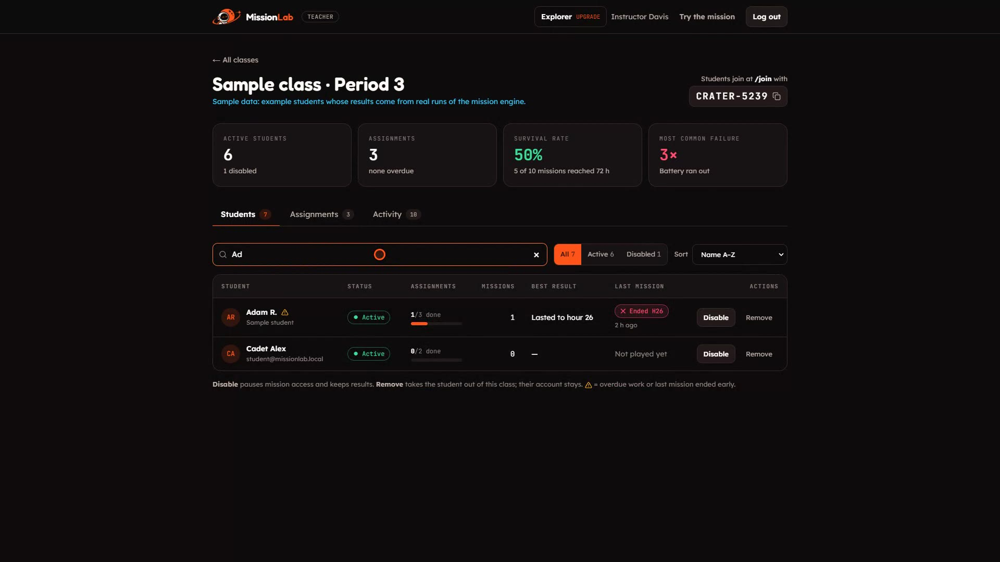

MISSION 01
The Red Storm
- Hazard
- A dust storm cuts solar power for 72 hours.
- Learn
- Electrical power, water recycling, resource allocation.
A rare extraterrestrial material. Once purified, it is worth more than gold, and becomes a new interplanetary currency.
No currency can replace one.
Far from help, small failures become emergencies fast.
Solar output collapses. Life support still needs energy.
A leak, or an instrument that is lying?
Oxygen looks fine. The air is not.
Need real systems understanding and decision practice.
Need repeatable scenarios and a view of how students reason.

Must recognise, diagnose and fix the unexpected, then prove the fix worked.



Observe → collect evidence → diagnose the hatch seal → isolate the valve → 7-step repair → pressure-hold test passed. Verified recovery at mission minute 23.
The engine decides. The 3D view shows it.
NOVA explains it. AI never touches the physics.
TypeScript, Tailwind, Zustand state
Visualises engine state, walkable
Offline rule-based tutor, optional server-side Gemini
Pure TypeScript. Every action validated, every outcome calculated, every run reproducible, so rewind is exact.
Prisma + PostgreSQL
Learn by experimenting, failing safely and trying again.
See how each student reasoned. Assign missions to the class or chosen students.
A browser-based STEM platform that scales without special hardware.

Next step: classroom pilots to measure learning outcomes.
Runs in any browser
Walk the habitat in a headset
Repair steps overlaid on real equipment
Physical props, simulated faults
Learners solve missions together
Our mission: help the next generation learn before they launch.
Now, see it in action ▶